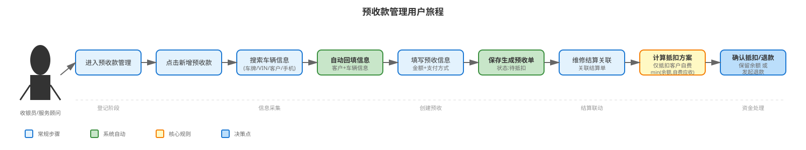
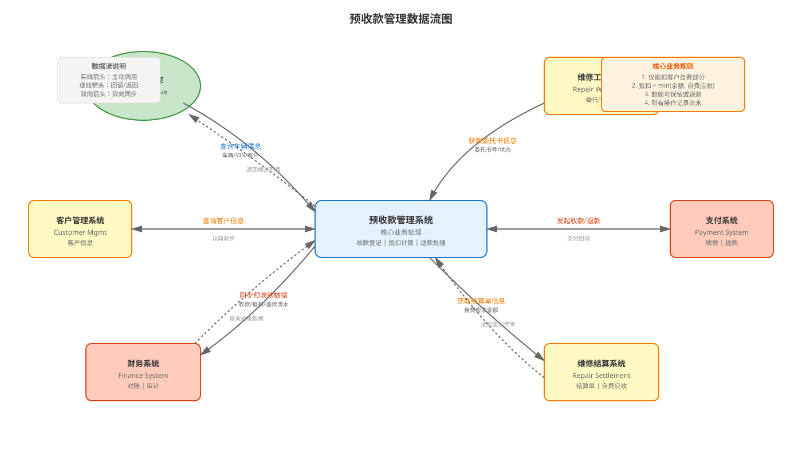
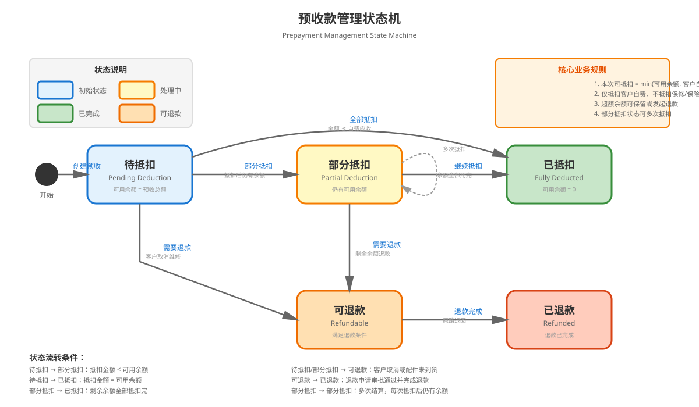

| 时间 | 版本号 | 变更人 | 变更类型 | 预计上线时间 | 主要变更内容 |
|---|---|---|---|---|---|
| 2026-06-01 | V1.0 | AI整理 | 创建 | 待定 | 基于预收款管理原型及业务规则，整理生成预收款管理 PRD。 |
| 一级菜单 | 二级菜单 | 三级菜单 | 功能菜单 | 功能模块 | 功能说明 | 使用角色 |
|---|---|---|---|---|---|---|
| 财务 | 预收款管理 | 预收款台账 | 预收款台账页 | 查询页面 | 用于查看和管理客户预收款记录，跟踪余额状态。 | 服务顾问、收银员、财务人员 |
| 财务 | 预收款管理 | 预收款台账 | 预收款详情页 | 详情界面 | 用于展示预收款详细信息、客户车辆信息、收款流水及业务时间线。 | 服务顾问、收银员、财务人员 |
| 财务 | 预收款管理 | 结算抵扣联动 | 抵扣联动页 | 抵扣管理 | 用于管理预收款与维修结算单的抵扣关系，仅抵扣客户自费部分。 | 服务顾问、结算岗 |
| 财务 | 预收款管理 | 退款处理 | 退款处理页 | 退款管理 | 用于处理预收款余额退款申请和记录。 | 收银员、财务人员 |
| 财务 | 预收款管理 | 收款流水 | 收款流水页 | 流水查询 | 用于查看所有预收款的收款、抵扣、退款流水记录。 | 财务人员、审计人员 |
预收款管理 --- 预收款记录（1 --> N）
| 对象名称 | 名称 | 是否必填 | 类型 | 长度 | 备注 |
|---|---|---|---|---|---|
| 预收款记录 | 预收单号 | 是 | 文本 | 50 | 预收款唯一编号，格式如 YSK202605140001。 |
| 预收款记录 | 来源单号 | 是 | 文本 | 50 | 关联的维修委托书号或缺件单号。 |
| 预收款记录 | 来源类型 | 是 | 枚举 | - | 枚举值：维修工单、缺件待料、维修委托书。 |
| 预收款记录 | 服务站 | 是 | 文本 | 100 | 收款服务站名称。 |
| 预收款记录 | 服务顾问 | 是 | 文本 | 100 | 负责该预收款的服务顾问。 |
| 预收款记录 | 收款人 | 是 | 文本 | 100 | 实际收款的收银员。 |
| 预收款记录 | 客户姓名 | 是 | 文本 | 100 | 车主或送修客户名称。 |
| 预收款记录 | 手机号 | 是 | 文本 | 30 | 客户联系方式。 |
| 预收款记录 | 车牌号 | 否 | 文本 | 30 | 车辆牌照，可手动输入或搜索填充。 |
| 预收款记录 | 车架号/VIN | 否 | 文本 | 50 | 车辆识别码，可手动输入或搜索填充。 |
| 预收款记录 | 车系 | 否 | 文本 | 100 | 车辆系列型号。 |
| 预收款记录 | 预收总额 | 是 | 数字 | - | 本次预收款总金额。 |
| 预收款记录 | 已抵扣金额 | 是 | 数字 | - | 已用于结算抵扣的金额。 |
| 预收款记录 | 可用余额 | 是 | 数字 | - | 当前可用于抵扣或退款的余额。 |
| 预收款记录 | 支付方式 | 是 | 枚举 | - | 枚举值：微信、支付宝、银行卡、现金、混合支付。 |
| 预收款记录 | 状态 | 是 | 枚举 | - | 枚举值：待抵扣、部分抵扣、已抵扣、可退款、已退款。 |
| 预收款记录 | 创建时间 | 是 | 日期时间 | - | 预收款登记时间。 |
| 预收款记录 | 最后操作时间 | 是 | 日期时间 | - | 最后一次抵扣或退款操作时间。 |
| 预收款记录 | 备注 | 否 | 长文本 | 2000 | 预收款说明或特殊情况记录。 |
| 收款流水 | 流水类型 | 是 | 枚举 | - | 枚举值：收款、抵扣、退款。 |
| 收款流水 | 金额 | 是 | 数字 | - | 本次流水金额。 |
| 收款流水 | 操作人 | 是 | 文本 | 100 | 执行操作的系统用户。 |
| 收款流水 | 支付方式 | 是 | 文本 | 50 | 本次流水的支付方式或抵扣方式。 |
| 收款流水 | 操作时间 | 是 | 日期时间 | - | 流水发生时间。 |
| 收款流水 | 摘要 | 否 | 文本 | 500 | 流水说明。 |
用户旅程流程图如下：

数据流图如下：

状态机图如下：

预收款管理关注的状态节点如下：
状态流转关系：
原型来源：`prototype-workbench/src/prototypes/prepayment-management`
所属模块：预收款管理
本页面依据预收款管理原型、维修结算联动规则和财务管理需求生成。
核心业务规则：
| 字段名 | 是否必填 | 控件类型 | 备注 |
|---|---|---|---|
| 关键词搜索 | 否 | 手工输入 | 支持按预收单号、维修单号、客户姓名、车牌号、手机号查询。 |
| 状态 | 否 | 下拉单选 | 可选：全部状态、待抵扣、部分抵扣、已抵扣、可退款、已退款。 |
| 服务站 | 否 | 手工输入或下拉 | 支持按服务站筛选。 |
| 创建时间起 | 否 | 日期选择 | 预收款创建时间范围起始日期。 |
| 创建时间止 | 否 | 日期选择 | 预收款创建时间范围结束日期。 |
| 列名 | 是否支持排序 | 特殊说明 | 截图 |
|---|---|---|---|
| 预收单号 | 是 | 点击可进入详情页 | |
| 来源单号 | 是 | 关联的维修委托书号或缺件单号 | |
| 客户 | 是 | ||
| 车牌号 | 是 | ||
| 预收金额 | 是 | 本次预收款总金额 | |
| 已抵扣 | 是 | 已用于结算抵扣的金额 | |
| 可用余额 | 是 | 当前可用于抵扣或退款的余额，高亮显示 | |
| 支付方式 | 否 | 微信、支付宝、银行卡、现金、混合支付 | |
| 状态 | 是 | 待抵扣、部分抵扣、已抵扣、可退款、已退款 | |
| 最后操作时间 | 是 | 最后一次抵扣或退款操作时间 |
| 操作按钮 | 按钮可用条件 | 按钮操作逻辑 | 截图 |
|---|---|---|---|
| 新增预收款 | 始终可用 | 打开预收款登记表单，填写后保存创建新的预收款记录。 | |
| 查询 | 始终可用 | 按筛选条件刷新列表数据。 | |
| 重置 | 始终可用 | 清空筛选条件并恢复默认值。 | |
| 刷新余额 | 始终可用 | 刷新所有预收款的可用余额和状态。 |
| 行级操作按钮 | 按钮可用条件 | 操作形式 | 按钮操作逻辑 | 截图 |
|---|---|---|---|---|
| 查看详情 | 始终显示 | 跳转 | 点击预收单号进入详情页，查看完整预收款信息、收款流水和业务时间线。 |
| 字段名称 | 是否必填 | 控件类型 | 特殊说明 |
|---|---|---|---|
| 车辆搜索 | 否 | 搜索输入框 | 输入车牌号、车架号、客户姓名或手机号搜索车辆，选择后自动回填客户和车辆信息。 |
| 维修委托书 | 是 | 手工输入 | 关联的维修委托书号。 |
| 来源类型 | 是 | 只读 | 默认为"维修委托书"，不可修改。 |
| 服务站 | 是 | 手工输入 | 收款服务站名称。 |
| 服务顾问 | 是 | 手工输入 | 负责该预收款的服务顾问。 |
| 收款人 | 是 | 手工输入 | 实际收款的收银员。 |
| 客户姓名 | 是 | 手工输入 | 车主或送修客户名称，可通过车辆搜索自动填充。 |
| 手机号 | 是 | 手工输入 | 客户联系方式，可通过车辆搜索自动填充。 |
| 车牌号 | 否 | 手工输入 | 车辆牌照，可通过车辆搜索自动填充或手动输入。 |
| 车架号 | 否 | 手工输入 | 车辆识别码，可通过车辆搜索自动填充或手动输入。 |
| 车系 | 否 | 手工输入 | 车辆系列型号，可通过车辆搜索自动填充。 |
| 预收金额 | 是 | 数字输入 | 本次预收款总金额，必须大于0。 |
| 支付方式 | 是 | 下拉单选 | 可选：微信、支付宝、银行卡、现金、混合支付。 |
| 备注 | 否 | 多行文本 | 预收款说明或特殊情况记录。 |
特殊说明：
| 步骤描述 | 实体及属性说明 |
|---|---|
| 校验必填字段 | 维修委托书、客户姓名、手机号、预收金额必须填写。 |
| 校验预收金额 | 预收金额必须大于0。 |
| 生成预收单号 | 系统自动生成预收单号，格式如 YSK + 年月日 + 4位流水号。 |
| 创建预收款记录 | 保存预收款记录，初始状态为"待抵扣"，可用余额等于预收总额。 |
| 记录收款流水 | 创建收款流水记录，类型为"收款"，记录操作人、支付方式、金额和时间。 |
| 跳转详情页 | 保存成功后，自动跳转到该预收款的详情页。 |
| 页面模块 | 字段名称 | 特殊说明 |
|---|---|---|
| 顶部操作区 | 返回列表 | 点击返回预收款台账列表。 |
| 基础信息 | 预收单号 | 展示当前预收单号。 |
| 基础信息 | 来源单号 | 关联的维修委托书号或缺件单号。 |
| 基础信息 | 来源类型 | 维修工单、缺件待料等。 |
| 基础信息 | 服务站 | |
| 基础信息 | 服务顾问 | |
| 基础信息 | 收款人 | |
| 基础信息 | 客户姓名 | |
| 基础信息 | 手机号 | |
| 基础信息 | 车牌号 | |
| 基础信息 | VIN | |
| 基础信息 | 车系 | |
| 基础信息 | 状态 | 待抵扣、部分抵扣、已抵扣、可退款、已退款。 |
| 余额信息 | 预收总额 | 以卡片形式展示。 |
| 余额信息 | 已抵扣 | 以卡片形式展示。 |
| 余额信息 | 可用余额 | 以高亮卡片形式展示，强调当前可用金额。 |
| 备注 | 备注内容 | 展示预收款说明或特殊情况记录。 |
| 结算关联 | 关联结算单 | 展示关联的维修结算单号。 |
| 结算关联 | 结算总应收 | 本次结算的总应收金额。 |
| 结算关联 | 客户自费应收 | 本次结算中客户自费部分的应收金额，高亮显示。 |
| 结算关联 | 保修应收 | 本次结算中保修部分的应收金额。 |
| 结算关联 | 保险应收 | 本次结算中保险部分的应收金额。 |
| 抵扣模拟 | 抵扣规则说明 | 展示"系统抵扣规则：本次可抵扣 = min(预收可用余额, 客户自费应收)，不抵扣保修与保险金额。" |
| 抵扣模拟 | 本次可抵扣预收 | 计算并展示本次可抵扣的预收款金额。 |
| 抵扣模拟 | 抵扣后客户仍需支付 | 计算并展示抵扣后客户仍需支付的自费金额。 |
| 抵扣模拟 | 抵扣后剩余预存 | 计算并展示抵扣后剩余的预收款余额。 |
| 超额处理 | 处理方式选择 | 当预收款大于客户自费应收时，提供"保留余额"和"发起退款"两个选项。 |
| 超额处理 | 保留为客户预存余额 | 展示选择"保留余额"时的金额。 |
| 超额处理 | 本次退款申请金额 | 展示选择"发起退款"时的金额。 |
| 操作按钮 | 确认抵扣方案 | 确认当前抵扣方案，生成抵扣记录。 |
| 操作按钮 | 发起退款 | 打开退款申请弹窗，填写退款信息。 |
| 收款流水 | 流水列表 | 展示该预收款的所有收款、抵扣、退款流水记录。 |
| 收款流水 | 流水类型 | 收款、抵扣、退款，用不同颜色标识。 |
| 收款流水 | 金额 | 本次流水金额。 |
| 收款流水 | 摘要 | 流水说明，如"维修进场预收"、"结算单 JS20260514051 抵扣客户自费"。 |
| 收款流水 | 操作人 | 执行操作的系统用户。 |
| 收款流水 | 支付方式 | 本次流水的支付方式或抵扣方式。 |
| 收款流水 | 时间 | 流水发生时间。 |
| 业务时间线 | 时间线列表 | 展示预收款的关键业务节点，如完成预收登记、同步结算联动状态、自动抵扣客户自费等。 |
| 列名 | 是否支持排序 | 特殊说明 | 截图 |
|---|---|---|---|
| 预收单号 | 是 | 点击可进入详情页 | |
| 客户 | 是 | ||
| 可用余额 | 是 | 当前可用于抵扣的余额，高亮显示 | |
| 关联结算单 | 是 | 关联的维修结算单号 | |
| 客户自费应收 | 是 | 本次结算中客户自费部分的应收金额 | |
| 本次可抵扣 | 是 | 计算得出的本次可抵扣金额 = min(可用余额, 客户自费应收) | |
| 剩余预存 | 是 | 抵扣后剩余的预收款余额 | |
| 建议动作 | 否 | 根据剩余预存金额给出建议，如"保留余额 / 发起退款"或"直接抵扣" |
特殊说明：
| 列名 | 是否支持排序 | 特殊说明 | 截图 |
|---|---|---|---|
| 预收单号 | 是 | ||
| 客户 | 是 | ||
| 来源类型 | 否 | 维修工单、缺件待料等 | |
| 可退款余额 | 是 | 当前可退款的余额，高亮显示 | |
| 状态 | 是 | 可退款、部分抵扣、待抵扣等 | |
| 最后操作时间 | 是 | ||
| 处理建议 | 否 | 根据状态给出建议，如"优先发起退款"或"可先保留余额" |
特殊说明：
| 列名 | 是否支持排序 | 特殊说明 | 截图 |
|---|---|---|---|
| 资金类型 | 是 | 收款、抵扣、退款，用不同颜色标识 | |
| 预收单号 | 是 | ||
| 客户 | 是 | ||
| 金额 | 是 | 本次流水金额，高亮显示 | |
| 支付方式 | 否 | 微信、支付宝、银行卡、现金、系统抵扣、原路退回等 | |
| 操作人 | 是 | 执行操作的系统用户 | |
| 时间 | 是 | 流水发生时间 | |
| 摘要 | 否 | 流水说明，如"维修进场预收"、"结算单 JS20260514051 抵扣客户自费" |
特殊说明：
本功能原型未提供导入界面。
预收款台账导出字段：
| 字段 | 特殊说明 |
|---|---|
| 预收单号 | |
| 来源单号 | |
| 来源类型 | |
| 服务站 | |
| 服务顾问 | |
| 收款人 | |
| 客户姓名 | |
| 手机号 | |
| 车牌号 | |
| 车架号 | |
| 车系 | |
| 预收总额 | |
| 已抵扣金额 | |
| 可用余额 | |
| 支付方式 | |
| 状态 | |
| 创建时间 | |
| 最后操作时间 | |
| 备注 |
收款流水导出字段：
| 字段 | 特殊说明 |
|---|---|
| 资金类型 | |
| 预收单号 | |
| 客户 | |
| 金额 | |
| 支付方式 | |
| 操作人 | |
| 时间 | |
| 摘要 |
| 接口名称 | 接口说明 | 请求方式 | 请求参数 | 响应参数 |
|---|---|---|---|---|
| 查询预收款列表 | 根据筛选条件查询预收款台账列表 | POST | 关键词、状态、服务站、创建时间范围、分页参数 | 预收款记录列表、总数 |
| 查询预收款详情 | 根据预收单号查询预收款详细信息 | GET | 预收单号 | 预收款详细信息、收款流水、业务时间线 |
| 创建预收款 | 新增预收款记录 | POST | 来源单号、来源类型、服务站、服务顾问、收款人、客户信息、车辆信息、预收金额、支付方式、备注 | 预收单号、创建结果 |
| 搜索车辆 | 根据关键词搜索车辆档案 | GET | 关键词（车牌号、车架号、客户姓名、手机号） | 车辆候选列表（最多4条） |
| 查询待抵扣清单 | 查询可用余额大于0的预收款记录及关联结算单信息 | POST | 筛选条件、分页参数 | 待抵扣预收款列表、关联结算单信息 |
| 计算抵扣方案 | 根据预收款余额和结算单自费应收计算抵扣方案 | POST | 预收单号、结算单号 | 本次可抵扣金额、抵扣后客户仍需支付、抵扣后剩余预存 |
| 确认抵扣 | 确认抵扣方案并生成抵扣记录 | POST | 预收单号、结算单号、抵扣金额、超额处理方式 | 抵扣结果、更新后的预收款状态 |
| 查询退款候选 | 查询可退款的预收款记录 | POST | 筛选条件、分页参数 | 可退款预收款列表 |
| 发起退款 | 创建退款申请 | POST | 预收单号、退款金额、退款原因 | 退款申请结果 |
| 查询收款流水 | 查询所有预收款的收款、抵扣、退款流水 | POST | 筛选条件、分页参数 | 收款流水列表、总数 |
| 刷新余额 | 刷新所有预收款的可用余额和状态 | POST | 无 | 刷新结果 |
预收款管理系统与以下系统存在数据交互：
| 模块 | 接口提供方 | 接口调用方 | 接口名称 | 接口地址 | 接口文档 |
|---|---|---|---|---|---|
| 维修工单管理 | 维修工单系统 | 预收款管理 | 查询维修委托书信息 | /api/repair/workorder/query | 待补充 |
| 维修结算 | 维修结算系统 | 预收款管理 | 查询结算单信息 | /api/repair/settlement/query | 待补充 |
| 维修结算 | 预收款管理 | 维修结算系统 | 通知预收款抵扣 | /api/prepayment/deduction/notify | 待补充 |
| 车辆档案 | 车辆档案系统 | 预收款管理 | 搜索车辆信息 | /api/vehicle/search | 待补充 |
| 客户管理 | 客户管理系统 | 预收款管理 | 查询客户信息 | /api/customer/query | 待补充 |
| 财务系统 | 预收款管理 | 财务系统 | 同步预收款数据 | /api/finance/prepayment/sync | 待补充 |
| 支付系统 | 支付系统 | 预收款管理 | 发起支付 | /api/payment/pay | 待补充 |
| 支付系统 | 支付系统 | 预收款管理 | 发起退款 | /api/payment/refund | 待补充 |
说明：本 PRD 基于预收款管理原型（prototype-workbench/src/prototypes/prepayment-management）及维修结算联动规则整理生成。核心业务逻辑为：预收款仅抵扣客户自费部分，当预收款大于客户自费应收时，剩余金额可保留为客户预存余额或发起退款。支持通过车辆搜索自动回填客户和车辆信息，所有资金变动均记录流水用于财务对账。